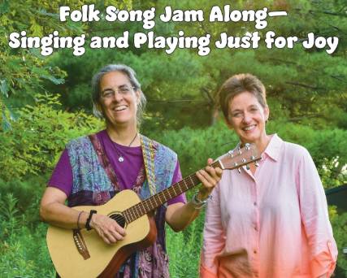
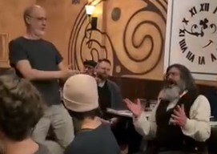
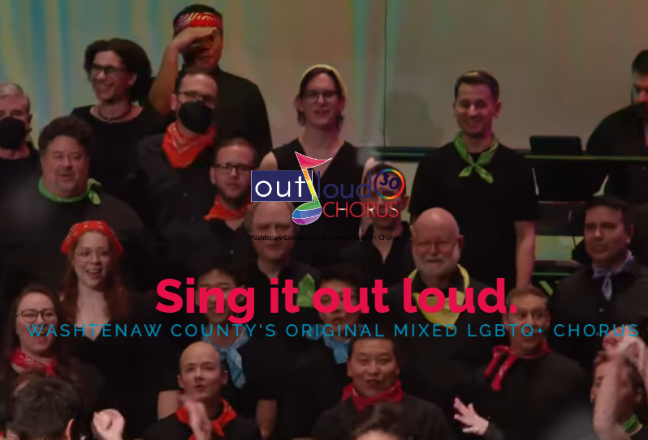
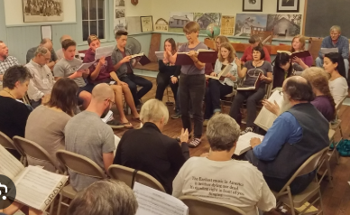
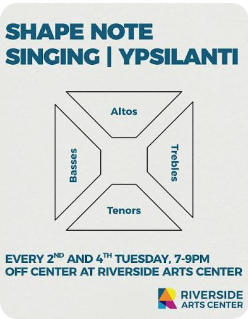

Tree-town Pub Sing
Literally, a traditional pub-sing. 50 - 100 folks gather,
once a month, at an actual pub.
(Typically 1st Mondays, but it varies.)
Anyone can lead a song; any song with a teachable chorus is welcome.
We lean towards 'traditional', folk, sea-songs, and the like -- but
we get the occasional pop or Disney song, too!
A great way to sing along with others, no matter how well you sing.
The location is the "Celtic room" at Conor O'Neill's.
Free, but most attendees buy a drink or dinner.
Tree-town Pub Sing
Literally, a traditional pub-sing. 50 - 100 folks gather,
once a month, at an actual pub.
(Typically 1st Mondays, but it varies.)
Anyone can lead a song; any song with a teachable chorus is welcome.
We lean towards 'traditional', folk, sea-songs, and the like -- but
we get the occasional pop or Disney song, too!
A great way to sing along with others, no matter how well you sing.
The location is the "Celtic room" at Conor O'Neill's.
Free, but most attendees buy a drink or dinner.
 Matt Watroba community sing
An acclaimed folk singer/songwriter, folk-radio DJ for 40 years(!),
and a community-song leader,
Matt
hosts a monthly open 'sing' at the
Interfaith Center for Spiritual Growth",
near the Ann Arbor airport.
Anyone is welcome; each person is welcome to lead a song, request a song,
or pass.
Matt does fun 'warm-up' exercises that quickly bring the group together.
We often sing from "Rise Up Singing", but any song with a teachable chorus is welcome!
A $5 donation is encouraged but not required.
Matt Watroba community sing
An acclaimed folk singer/songwriter, folk-radio DJ for 40 years(!),
and a community-song leader,
Matt
hosts a monthly open 'sing' at the
Interfaith Center for Spiritual Growth",
near the Ann Arbor airport.
Anyone is welcome; each person is welcome to lead a song, request a song,
or pass.
Matt does fun 'warm-up' exercises that quickly bring the group together.
We often sing from "Rise Up Singing", but any song with a teachable chorus is welcome!
A $5 donation is encouraged but not required.

Folk Song Jam Along Come sing and play! Get more music in your life and join us for this family-friendly sing-along. Bring your voices and/or instruments -- lyrics and chords will be projected, so all can sing and strum along. Beginners welcome! You choose from 350+ familiar folk/pop songs. This event is led by Lori Fithian and Jean Chorazyczewski.
Charles Roth's in-home sing. An open, comfy in-home sing, in SE Ann Arbor. Limited to 20 people; contact Charles to attend. Similar to the pub-sing, but smaller. Free.
Out Loud Chorus is the largest North American mixed chorus for the LGTBQ+ community, bringing together people of all genders and sexual orientations, including straight allies. We are a non-auditioned chorus, and don't limit membership based on musical ability. We are committed to putting on musically excellent shows that are entertaining and fun for all while centering LGTBQ+ people.
Ann Arbor Sacred Harp is a "shape note" singing group. No experience is necessary, but it helps if you can read music, just a little bit. The songs are all 4-part harmony, but are taught -- and the "shape note" method, 100+ years strong, is possibly the easiest way to learn such songs. The lyrics are religious, but the group and the intent is not -- people of all faiths (and none!) gather for, and enjoy, these sings. Free.
Ypsilanti Shape Note singing group. No experience is necessary, but it helps if you can read music, just a little bit. The songs are all 4-part harmony, but are taught -- and the "shape note" method, 100+ years strong, is possibly the easiest way to learn such songs. The lyrics are religious, but the group and the intent is not -- people of all faiths (and none!) gather for, and enjoy, these sings. Free.